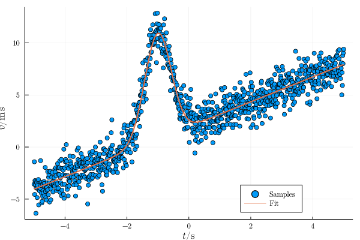

UnitfulLsqFit
Least squares fitting for Unitful quantities.
using Unitful
using LsqFit, Latexify, Plots
using UnitfulLsqFit, UnitfulLatexify, UnitfulRecipes
default(;fontfamily="Computer Modern")
length = 1000
@. model(x, p) = p[1] + p[2]*exp(-((x-p[3])/p[4])^2) + p[5]*x
p0 = [
2.0u"m/s", # y offset
10.2u"m/s", # peak height
-1.0u"s", # x offset
0.6u"s", # peak width
1.2u"m/s^2", # slope
]
t = range(-5, 5; length)u"s"
v = model(t, p0) + randn(length)*u"m/s" # noisy signal
fit = curve_fit(model, t, v, [0.0u"m/s", 1.0u"m/s", 0.0u"s", 1.0u"s", 1.0u"m/s^2"])
mdtable([p0 fit.param];head=latexraw.([:Truth, :Fit]))| Truth | Fit |
|---|---|
| $2\;\mathrm{m}\,\mathrm{s}^{-1}$ | $1.994\;\mathrm{m}\,\mathrm{s}^{-1}$ |
| $10.2\;\mathrm{m}\,\mathrm{s}^{-1}$ | $10.14\;\mathrm{m}\,\mathrm{s}^{-1}$ |
| $-1\;\mathrm{s}$ | $-0.9962\;\mathrm{s}$ |
| $0.6\;\mathrm{s}$ | $0.6205\;\mathrm{s}$ |
| $1.2\;\mathrm{m}\,\mathrm{s}^{-2}$ | $1.212\;\mathrm{m}\,\mathrm{s}^{-2}$ |
plot(t, v; st=:scatter, label="Samples")
plot!(t,model(t, fit.param);
linewidth=2, label="Fit",
xguide="t", yguide="v", unitformat=(l,u)->"\$$l / $(latexraw(u))\$", legend=-45,
)/home/runner/.julia/packages/GR/9Vi4m/src/../deps/gr/bin/gksqt: error while loading shared libraries: libQt5Widgets.so.5: cannot open shared object file: No such file or directory connect: Connection refused GKS: can't connect to GKS socket application GKS: Open failed in routine OPEN_WS GKS: GKS not in proper state. GKS must be either in the state WSOP or WSAC in routine ACTIVATE_WS
